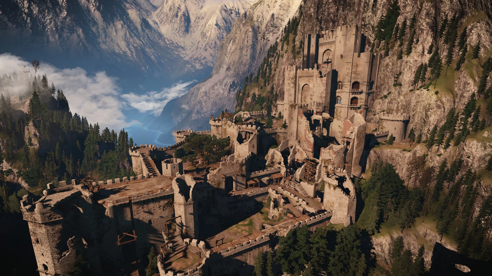
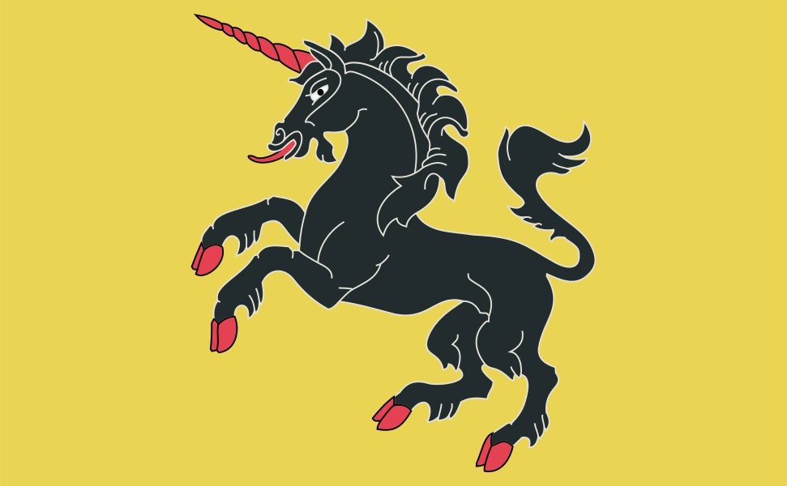

КАЭР МОРХЕН

ОСНОВНАЯ ИНФОРМАЦИЯ
ДРУГИЕ НАЗВАНИЯ
Крепость волков
Крепость Старого Моря
ТИП
КРЕПОСТЬ
СТРАНА
Каэдвен
РАСПОЛОЖЕНИЕ
Долина Каэр Морхен
Каэр Морхен
Каэр Морхен — горная крепость, в которой на протяжении нескольких веков располагалась одна из шести известных ведьмачьих школ — Школа Волка.
Описание
Каэр Морхен находится далеко на севере Синих Гор — формально, на территории Каэдвена, однако мало кто знает о её существовании, а местонахождение и путь в крепость известны лишь избранным.
Места